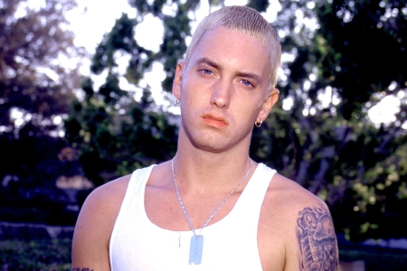

Marshall Bruce Mathers III (born October 17, 1972), known professionally as Eminem, is an American rapper, songwriter, and record producer.
He is credited with popularizing hip hop in middle America and is critically acclaimed as one of the greatest rappers of all time.
Eminem's global success and acclaimed works are widely regarded as having broken racial barriers for the acceptance of white rappers in popular music.
While much of his transgressive work during the late 1990s and early 2000s made him widely controversial, he came to be a representation of popular angst of the American underclass, and has been cited as an influence for many artists of various genres.